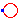
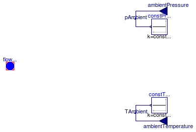
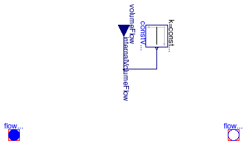
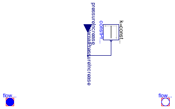

Anton Haumer
Technical Consulting & Electrical Engineering
A-3423 St.Andrae-Woerdern, Austria
email: a.haumer@haumer.at
Dr.Christian Kral
Österreichisches Forschungs- und Prüfzentrum Arsenal Ges.m.b.H.
arsenal research
Giefinggasse 2
A-1210 Vienna, Austria
Copyright © 1998-2009, Modelica Association, Anton Haumer and arsenal research.
The Modelica package is free software; it can be redistributed and/or modified under the terms of the Modelica license, see the license conditions and the accompanying disclaimer here.
Extends from Modelica.Icons.Library2 (Icon for library where additional icon elements shall be added).
| Name | Description |
|---|---|
| Ambient | Ambient with constant properties |
|  AbsolutePressure | Defines absolute pressure level |
| VolumeFlow | Enforces constant volume flow |
| Enforces constant pressure increase | |
| IdealPump | Model of an ideal pump |

| Type | Name | Default | Description |
|---|---|---|---|
| Medium | medium | FluidHeatFlow.Media.Medium() | Ambient medium |
| Boolean | usePressureInput | false | enable / disable pressure input |
| Pressure | constantAmbientPressure | Ambient pressure [Pa] | |
| Boolean | useTemperatureInput | false | enable / disable temperature input |
| Temperature | constantAmbientTemperature | Ambient temperature [K] |
| Type | Name | Description |
|---|---|---|
| FlowPort_a | flowPort | |
| input RealInput | ambientPressure | |
| input RealInput | ambientTemperature |
model Ambient "Ambient with constant properties"
extends Interfaces.Partials.Ambient;
parameter Boolean usePressureInput=false "enable / disable pressure input";
parameter Modelica.SIunits.Pressure constantAmbientPressure(start=0)
"Ambient pressure";
parameter Boolean useTemperatureInput=false
"enable / disable temperature input";
parameter Modelica.SIunits.Temperature constantAmbientTemperature(start=293.15, displayUnit="degC")
"Ambient temperature";
Modelica.Blocks.Interfaces.RealInput ambientPressure if usePressureInput;
Modelica.Blocks.Interfaces.RealInput ambientTemperature if useTemperatureInput;
protected
Modelica.Blocks.Sources.Constant constPressure(final k=
constantAmbientPressure) if not usePressureInput;
Modelica.Blocks.Interfaces.RealInput pAmbient;
Modelica.Blocks.Sources.Constant constTemperature(final k=
constantAmbientTemperature) if not useTemperatureInput;
Modelica.Blocks.Interfaces.RealInput TAmbient;
equation
flowPort.p = pAmbient;
T = TAmbient;
connect(ambientPressure, pAmbient);
connect(ambientTemperature, TAmbient);
connect(constPressure.y, pAmbient);
connect(constTemperature.y, TAmbient);
end Ambient;

| Type | Name | Default | Description |
|---|---|---|---|
| Medium | medium | FluidHeatFlow.Media.Medium() | medium |
| Pressure | p | Pressure ground [Pa] |
| Type | Name | Description |
|---|---|---|
| FlowPort_a | flowPort |
model AbsolutePressure "Defines absolute pressure level"
parameter FluidHeatFlow.Media.Medium medium=FluidHeatFlow.Media.Medium()
"medium";
parameter Modelica.SIunits.Pressure p(start=0) "Pressure ground";
Interfaces.FlowPort_a flowPort(final medium=medium);
equation
// defining pressure
flowPort.p = p;
// no energy exchange; no mass flow by default
flowPort.H_flow = 0;
end AbsolutePressure;

| Type | Name | Default | Description |
|---|---|---|---|
| Medium | medium | FluidHeatFlow.Media.Medium() | Medium in the component |
| Mass | m | Mass of medium [kg] | |
| Temperature | T0 | Initial temperature of medium [K] | |
| Real | tapT | 1 | Defines temperature of heatPort between inlet and outlet temperature |
| Boolean | useVolumeFlowInput | false | enable / disable volume flow input |
| VolumeFlowRate | constantVolumeFlow | Volume flow rate [m3/s] |
| Type | Name | Description |
|---|---|---|
| FlowPort_a | flowPort_a | |
| FlowPort_b | flowPort_b | |
| input RealInput | volumeFlow |
model VolumeFlow "Enforces constant volume flow"
extends Interfaces.Partials.TwoPort(final tapT=1);
parameter Boolean useVolumeFlowInput=false
"enable / disable volume flow input";
parameter Modelica.SIunits.VolumeFlowRate constantVolumeFlow(start=1)
"Volume flow rate";
Modelica.Blocks.Interfaces.RealInput volumeFlow if useVolumeFlowInput;
protected
Modelica.Blocks.Sources.Constant constVolumeFlow(final k=constantVolumeFlow) if
not useVolumeFlowInput;
Modelica.Blocks.Interfaces.RealInput internalVolumeFlow;
equation
Q_flow = 0;
V_flow = internalVolumeFlow;
connect(volumeFlow, internalVolumeFlow);
connect(constVolumeFlow.y, internalVolumeFlow);
end VolumeFlow;

| Type | Name | Default | Description |
|---|---|---|---|
| Medium | medium | FluidHeatFlow.Media.Medium() | Medium in the component |
| Mass | m | Mass of medium [kg] | |
| Temperature | T0 | Initial temperature of medium [K] | |
| Real | tapT | 1 | Defines temperature of heatPort between inlet and outlet temperature |
| Boolean | usePressureIncreaseInput | false | enable / disable pressure increase input |
| Pressure | constantPressureIncrease | Pressure increase [Pa] |
| Type | Name | Description |
|---|---|---|
| FlowPort_a | flowPort_a | |
| FlowPort_b | flowPort_b | |
| input RealInput | pressureIncrease |
model PressureIncrease "Enforces constant pressure increase"
extends Interfaces.Partials.TwoPort(final tapT=1);
parameter Boolean usePressureIncreaseInput=false
"enable / disable pressure increase input";
parameter Modelica.SIunits.Pressure constantPressureIncrease(start=1)
"Pressure increase";
Modelica.Blocks.Interfaces.RealInput pressureIncrease if usePressureIncreaseInput;
protected
Modelica.Blocks.Sources.Constant constPressureIncrease(final k=
constantPressureIncrease) if not usePressureIncreaseInput;
Modelica.Blocks.Interfaces.RealInput internalPressureIncrease;
equation
Q_flow = 0;
dp = -internalPressureIncrease;
connect(pressureIncrease, internalPressureIncrease);
connect(constPressureIncrease.y, internalPressureIncrease);
end PressureIncrease;

| Type | Name | Default | Description |
|---|---|---|---|
| Medium | medium | FluidHeatFlow.Media.Medium() | Medium in the component |
| Mass | m | Mass of medium [kg] | |
| Temperature | T0 | Initial temperature of medium [K] | |
| Real | tapT | 1 | Defines temperature of heatPort between inlet and outlet temperature |
| Pump characteristic | |||
| AngularVelocity | wNominal | Nominal speed [rad/s] | |
| Pressure | dp0 | Max. pressure increase @ V_flow=0 [Pa] | |
| VolumeFlowRate | V_flow0 | Max. volume flow rate @ dp=0 [m3/s] | |
| Type | Name | Description |
|---|---|---|
| FlowPort_a | flowPort_a | |
| FlowPort_b | flowPort_b | |
| Flange_a | flange_a |
model IdealPump "Model of an ideal pump"
extends Interfaces.Partials.TwoPort(final tapT=1);
parameter Modelica.SIunits.AngularVelocity wNominal(start=1, displayUnit="1/min")
"Nominal speed";
parameter Modelica.SIunits.Pressure dp0(start=2)
"Max. pressure increase @ V_flow=0";
parameter Modelica.SIunits.VolumeFlowRate V_flow0(start=2)
"Max. volume flow rate @ dp=0";
Modelica.SIunits.AngularVelocity w=der(flange_a.phi) "Speed";
protected
Modelica.SIunits.Pressure dp1;
Modelica.SIunits.VolumeFlowRate V_flow1;
public
Modelica.Mechanics.Rotational.Interfaces.Flange_a flange_a;
equation
// pump characteristic
dp1 = dp0*sign(w/wNominal)*(w/wNominal)^2;
V_flow1 = V_flow0*(w/wNominal);
if noEvent(abs(w)<Modelica.Constants.small) then
dp = 0;
flange_a.tau = 0;
else
dp = -dp1*(1-noEvent(abs(V_flow/V_flow1)));
flange_a.tau*w = -dp*V_flow;
end if;
// no energy exchange with medium
Q_flow = 0;
end IdealPump;